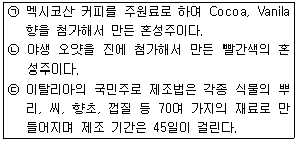
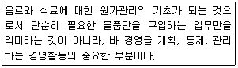
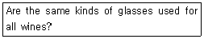
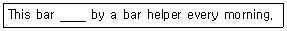
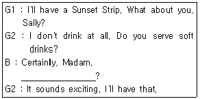
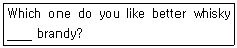
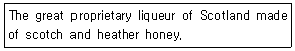

조주기능사 (2015-04-04 기출문제)
1과목: 주류학개론
1. 매년 보졸레 누보의 출시일은?
- 11월 1째 주 목요일
- 11월 3째 주 목요일
- 11월 1째 주 금요일
- 11월 3째 주 금요일
(정답률: 75%)

2. 위스키의 제조과정을 순서대로 나열한 것으로 가장 적합한 것은?
- 맥아 - 당화 - 발효 - 증류 - 숙성
- 맥아 - 당화 - 증류 - 저장 - 후숙
- 맥아 - 발효 - 증류 - 당화 - 블렌딩
- 맥아 - 증류 - 저장 - 숙성 - 발효
(정답률: 80%)
3. 샴페인의 발명자는?
- Bordeaux
- Champagne
- St. Emilion
- Dom Perignon
(정답률: 74%)
4. 포도주에 아티초크를 배합한 리큐르로 약간 진한 커피색을 띠는 것은?
- Chartreuse
- Cynar
- Dubonnet
- Campari
(정답률: 68%)
5. 각 나라별 발포성 와인(Sparkling Wine)의 명칭이 잘못 연결된 것은?
- 프랑스 - Cremant
- 스페인 - Vin Mousseux
- 독일 - Sekt
- 이탈리아 - Spumante
(정답률: 60%)
6. 혼성주(COmpounded Liquor)에 대한 설명 중 틀린 것은?
- 칵테일 제조나 식후주로 사용된다.
- 발효주에 초근목피의 침출물을 혼합하여 만든다.
- 색채, 향기, 감미, 알코올의 조화가 잘 된 술이다.
- 혼성주는 고대 그리스 시대에 약용으로 사용되었다.
(정답률: 68%)
7. 주류의 주정 도수가 높은 것부터 낮은 순서대로 나열된 것으로 옳은 것은?
- Vermouth > Brandy > Fortified Wine > Kahlua
- Fortified Wine >Vermouth > Brandy > Beer
- Fortified Wine > Brandy > Beer > Kahlua
- Brandy > Sloe Gin > Fortified Wine > Beer
(정답률: 73%)
8. 프랑스의 와인제조에 대한 설명 줄 틀린 것은?
- 프로방스 에서는 주로 로제 와인을 많이 생산한다.
- 포도당이 에틸알코올과 탄산가스로 변한다.
- 포도 발효 상태에서 브랜디를 첨가한다.
- 포도 껍질에 있는 천연 효모의 작용으로 발효가 된다.
(정답률: 66%)
9. 살균방법에 의한 우유의 분류가 아닌 것은?
- 초저온살균우유
- 저온살균우유
- 고온살균우유
- 초고온살균우유
(정답률: 77%)
10. 에스프레소에 우유거품을 올린 것으로 다양한 모양의 디자인이 가능해 인기를 끌고 있는 커피는?
- 카푸치노
- 카페라테
- 콘파냐
- 카페모카
(정답률: 68%)
11. 곡물로 만들어 농번기에 주로 먹었던 막걸리는 어느 분류에 속하는가?
- 혼성주
- 증류주
- 양조주
- 화주
(정답률: 87%)
12. 다음 중 혼성주에 속하는 것은?
- 그렌피딕
- 꼬냑
- 버드와이즈
- 캄파리
(정답률: 70%)
13. 코냑(Cognac) 생산 회사가 아닌 것은?
- 마르텔
- 헤네시
- 까뮈
- 화이트 홀스
(정답률: 72%)
14. 맥주 제조에 필요한 중요한 원료가 아닌 것은?
- 맥아
- 포도당
- 물
- 효모
(정답률: 93%)
15. 상면 발효 맥주가 아닌 것은?
- 에일맥주(Ale Beer)
- 포터맥주(Porter Beer)
- 스타우트 맥주(Stout Beer)
- 필스너 맥주(Pilsner Beer)
(정답률: 69%)
16. 차의 분류가 옳게 연결된 것은?
- 발효차 - 얼그레이
- 불발효차 - 보이차
- 반발효차 - 녹차
- 후발효차 - 자스민
(정답률: 64%)
17. 와인의 등급제도가 없는 나라는?
- 스위스
- 영국
- 헝가리
- 남아프리카공화국
(정답률: 80%)
18. 독일 와인 라벨 용어는?
- 로사토
- 트로컨
- 로쏘
- 비노
(정답률: 45%)
19. 보드카(Vodka)에 대한 설명 중 틀린 것은?
- 슬라브 민족의 국민주라고 할 수 있을 정도로 애음되는 술이다.
- 사탕수수를 주원료로 사용한다.
- 무색(colorless), 무미(tasteless), 무취(odorless)이다.
- 자작나무의 활성탄과 모래를 통과시켜 여과한 술이다.
(정답률: 83%)
20. 다음의 설명에 해당하는 혼성주를 옳게 연결한 것은?

- ㉠ 샤르뜨뢰즈(Chartreuse), ㉡ 시나(Cynar), ㉢ 캄파리(Campari)
- ㉠ 파샤(Pasha), ㉡ 슬로우 진(Sloe Gin), ㉢ 캄파리(Campari)
- ㉠ 칼루아(Kahlua), ㉡ 시나(Cynar), ㉢ 캄파리(Campari)
- ㉠ 칼루아(Kahlua), ㉡ 슬로우 진(Sloe Gin), ㉢ 캄파리(Campari)
(정답률: 76%)
21. 증류주가 아닌 것은?
- Light Rum
- Malt Whisky
- Brandy
- Bitters
(정답률: 85%)
22. 다음 중 양조주에 해당하는 것은?
- 청주(淸酒)
- 럼주(Rum)
- 소주(Soju)
- 리큐르(Liqueur)
(정답률: 82%)
23. 커피의 3대 원종이 아닌 것은?
- 피베리
- 아라비카
- 리베리카
- 로부스타
(정답률: 91%)
24. 비알콜성 음료(non-alcoholic beverage)의 설명으로 옳은 것은?
- 양조주, 증류주, 혼성주로 구분된다.
- 맥주, 위스키, 리큐르(liqueur)로 구분된다.
- 소프트드링크, 맥주, 브랜디로 구분한다.
- 청량음료, 영양음료, 기호음료로 구분한다.
(정답률: 94%)
25. 스코틀랜드의 위스키 생산지 중에서 가장 많은 증류소가 있는 지역은?
- 하이랜드(Highland)
- 스페이사이드(Speyside)
- 로우랜드(Lowland)
- 아일레이(Islay)
(정답률: 43%)
26. 곡류를 발효 증류 시킨 후 주니퍼베리, 고수풀, 안젤리카 등의 향료식물을 넣어 만든 증류주는?
- VODKA
- RUM
- GIN
- TEQUILA
(정답률: 80%)
27. 증류주에 대한 설명으로 가장 거리가 먼 것은?
- 대부분 알코올 도수가 20도 이상이다.
- 알코올 도수가 높아 잘 부패되지 않는다.
- 장기 보관 시 변질되므로 대부분 유통기간이 있다.
- 갈색의 증류주는 대부분 오크통에서 숙성시킨다.
(정답률: 78%)
28. 다음 중 소주의 설명 중 틀린 것은?
- 제조법에 따라 증류식 소주, 희석식 소주로 나뉜다.
- 우리나라에 소주가 들어온 연대는 조선시대이다.
- 주원료로는 쌀, 찹쌀, 보리 등이다.
- 삼해주는 조선 중엽 소주의 대명사로 알려질 만큼 성행했던 소주이다.
(정답률: 83%)
29. 영국에서 발명한 무색투명한 음료로서 키니네가 함유된 청량음료는?
- cider
- cola
- tonic water
- soda water
(정답률: 83%)
30. 다음 중 식전주로 알맞지 않은 것은?
- 셰리 와인
- 샴페인
- 캄파리
- 깔루아
(정답률: 67%)
2과목: 주장관리개론
31. 다음 중 Tumbler Glass는 어느 것인가?
- Champagne Glass
- Cocktail Glass
- Highball Glass
- Brandy Glass
(정답률: 84%)
32. 다음 와인 종류 중 냉각하여 제공하지 않는 것은?
- 클라렛(Claret)
- 호크(Hock)
- 샴페인(Champagne)
- 로제(Rose)
(정답률: 57%)
33. 칵테일을 만들 때, 흔들거나 섞지 않고 글라스에 직접 얼음과 재료를 넣어 바스푼이나 머들러로 휘저어 만드는 칵테일은?
- 스크루 드라이버(screw driver)
- 스팅어(stinger)
- 마가리타(magarita)
- 싱가포르 슬링(singapore sling)
(정답률: 57%)
34. Wine Master의 의미로 가장 적합한 것은?
- 와인의 제조 및 저장관리를 책임지는 사람
- 포도나무를 가꾸고 재배하는 사람
- 와인을 판매 및 관리하는 사람
- 와인을 구매하는 사람
(정답률: 74%)
35. 칵테일에 사용하는 얼음으로 적합하지 않은 것은?
- 컬러 얼음(Color Ice)
- 가루 얼음(Shaved Ice)
- 기계 얼음(Cube Ice)
- 작은 얼음(Cracked Ice)
(정답률: 88%)
36. 조주용 기물 종류 중 푸어러(Pourer)의 설명으로 옳은 것은?
- 쓰고 남은 청량음료를 밀폐시키는 병마개
- 칵테일을 마시기 쉽게 하기 위한 빨대
- 술병입구에 끼워 쏟아지는 양을 일정하게 만드는 기구
- 물을 담아놓고 쓰는 손잡이가 달린 물병
(정답률: 86%)
37. 다음 중 가장 많은 재료를 넣어 만드는 칵테일은?
- Manhattan
- Apple Martini
- Gibson
- Long Island Iced Tea
(정답률: 82%)
38. 다음 중 Gin Base에 속하는 칵테일은?
- Stinger
- Old-fashioned
- Dry Martini
- Sidecar
(정답률: 66%)
39. 와인의 Tasting 방법으로 가장 옳은 것은?
- 와인을 오픈한 후 공기와 접촉되는 시간을 최소화하여 바로 따른 후 마신다.
- 와인에 얼음을 넣어 냉각시킨 후 마신다.
- 와인 잔을 흔든 뒤 아로마나 부케의 향을 맡는다.
- 검은 종이를 테이블에 깔아 투명도 및 색을 확인한다.
(정답률: 84%)
40. 맥주 보관 방법 중 가장 적합한 것은?
- 냉장고에 5~10℃ 정도에 보관한다.
- 맥주 냉장 보관시 0℃이하로 보관한다.
- 장시간 보관하여도 무방하다.
- 맥주는 햇볕이 있는 곳에 보관해도 좋다.
(정답률: 77%)
41. 주장(Bar)관리의 의의로 가장 적합한 것은?
- 칵테일을 연구, 발전시키는 일이다.
- 음료(Beverage)를 많이 판매하는데 목적이 있다.
- 음료(Beverage) 재고조사 및 원가 관리의 우선함과 영업 이익을 추구하는데 목적이 있다.
- 주장 내에서 Bottles 서비스만 한다.
(정답률: 80%)
42. Old Fashioned Glass를 가장 잘 설명한 것은?
- 옛날부터 사용한 Cocktail Glass이다.
- 일명 On the Rocks Glass 라고도 하고 스템(Stem)이 없는 Glass이다.
- Juice를 Cocktail하여 마시는 Long Neck Glass이다.
- 일명 Cognac Glass라고 하고 튤립형의 스템(Stem)이 있는 Glass이다.
(정답률: 77%)
43. 와인의 적정온도 유지의 원칙으로 옳지 않은 것은?
- 보관 장소는 햇빛이 들지 않고 서늘하며, 습기가 없는 곳이 좋다.
- 연중 급격한 변화가 없는 곳이어야 한다.
- 와인에 전해지는 충격이나 진동이 없는 곳이 좋다.
- 코르크가 젖어 있도록 병을 눕혀서 보관해야 한다.
(정답률: 75%)
44. 연회(Banquet)석상에서 각 고객들이 마신(소비한)만큼 계산을 별도로 하는 바(Bar)를 무엇이라고 하는가?
- Banquet Bar
- Host Bar
- No-Host Bar
- Paid Bar
(정답률: 64%)
45. Saucer형 샴페인 글라스에 제공되며 Menthe(Green) 1oz, Cacao(White) 1oz, Light Milk(우유) 1oz를 셰이킹 하여 만드는 칵테일은?
- Gin Fizz
- Gimlet
- Grasshopper
- Gibson
(정답률: 71%)
46. 바 스푼(Bar Spoon)의 용도가 아닌 것은?
- 칵테일 조주 시 글래스 내용물을 섞을 때 사용한다.
- 얼음을 잘게 부술 때 사용한다.
- 프로팅칵테일(Floating Cocktail)을 만들 때 사용한다.
- 믹싱글라스를 이용하여 칵테일을 만들 때 휘젓는 용도로 사용한다.
(정답률: 91%)
47. 다음은 무엇에 대한 설명인가?

- 검수
- 구매
- 저장
- 출고
(정답률: 65%)
48. 플레인 시럽과 관련이 있는 것은?
- lemon
- butter
- cinnamon
- sugar
(정답률: 82%)
49. 볶은 커피의 보관 시 알맞은 습도는?
- 3.5% 이하
- 5~7%
- 10~12%
- 13% 이상
(정답률: 62%)
50. 조주기법(Cocktail Technique)에 관한 사항에 해당되지 않는 것은?
- Stirring
- Distilling
- Straining
- Chilling
(정답률: 72%)
3과목: 고객서비스영어
51. 다음 질문의 대답으로 적합한 것은?

- Yes, they are.
- No, they don't.
- Yes, they do.
- No, they are not.
(정답률: 58%)
52. Which drink is prepared with Gin?
- Tom collins
- Rob Roy
- B&B
- Black Russian
(정답률: 47%)
53. 다음의 밑줄에 들어갈 알맞은 것은?

- cleans
- is cleaned
- is cleaning
- be cleaned
(정답률: 64%)
54. 다음 대화 중 밑줄 친 부분에 들어갈 B의 질문으로 적합하지 않은 것은?

- How about a Virgin Colada?
- What about a Shirley Temple?
- How about a Black Russian?
- What about a Lemonade?
(정답률: 48%)
55. What is the Liqueur on apricot pits base?
- Benedictine
- Chartreuse
- Kahlua
- Amaretto
(정답률: 62%)
56. 다음의 밑줄에 들어간 단어로 알맞은 것은?

- as
- but
- and
- or
(정답률: 88%)
57. Which of the following is not compounded Liquor?
- Cutty Sark
- Curacao
- Advocaat
- Amaretto
(정답률: 52%)
58. 다음 중 brand가 의미하는 것은?
- 브랜디
- 상표
- 칵테일의 일종
- 심심한 맛
(정답률: 78%)
59. Which one is wine that can be served before meal?
- Table wine
- Dessert wine
- Aperitif wine
- Port wine
(정답률: 76%)
60. 다음에서 설명하는 혼성주는?

- Anisette
- Sambuca
- Drambuie
- Peter Heering
(정답률: 75%)